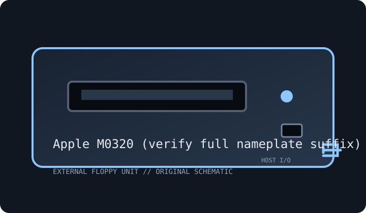

[ FLOPPY DRIVES // IDENTIFIED EXTERNAL MODEL ]
Apple FDHD External Floppy Drive (M0320)
Model-specific archive record. Enclosure labels do not always identify the installed mechanism or host controller; preserve the full suffix and inspect the unit before connection or service.

MODEL IDENTIFICATION: Apple M0320 (verify full nameplate suffix). Photograph the nameplate, serial, connector and power rating. Verify revision-specific instructions and inspect any replacement mechanism before use.
Recorded specifications
| Exact model | Apple M0320 (verify full nameplate suffix) |
|---|---|
| Drive size / type | 3.5-inch external floppy drive. |
| Capacity / formats | 1.4 MB Macintosh/PC-compatible high-density formats on supported hosts; 800/400 KB support is host- and revision-dependent. |
| Interface / controller | Apple external floppy connection (DB-19 on Macintosh FDHD family) and host FDHD controller; not USB. |
| Power | Host/cable power in supported Macintosh configurations; verify nameplate and service instructions before using substitutes. |
| Host OS / system compatibility | FDHD-capable Macintosh systems with compatible ROM/controller; earlier Macintosh hosts may not support 1.4 MB media. |
| Cable / connectors | Correct Apple external floppy cable and host port; identify adapters and preserve the model-specific cable. |
Compatibility and preservation caveats
FDHD/SuperDrive 1.4 MB support is controller/ROM-dependent. Confirm M0320 marking, and test with expendable media.
Inspect for corrosion, contamination, cracked plastics, damaged shutter, cable strain and prior repairs. Do not insert damaged media. Record host, OS, controller/driver, drive label, revision, media condition and acquisition settings. Preserve original images and document conversions separately.
Manufacturer manuals & archive references
- Macintosh Plus Owner’s Guide — Internet ArchiveEarlier Macintosh host reference; it predates FDHD and does not prove 1.4 MB compatibility.
- Apple Developer Documentation ArchiveApple platform documentation archive; check host-specific disk support and exact model.
Sources are described by scope; a support portal or related-family manual does not establish every model-specific rating. Prefer a complete matching manual and unit label over family-level assumptions.